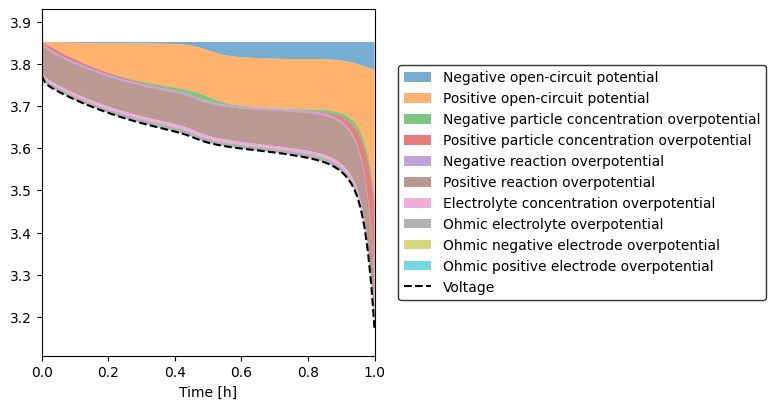
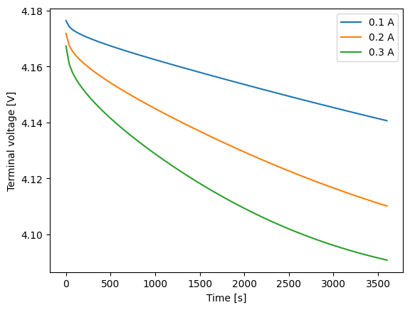
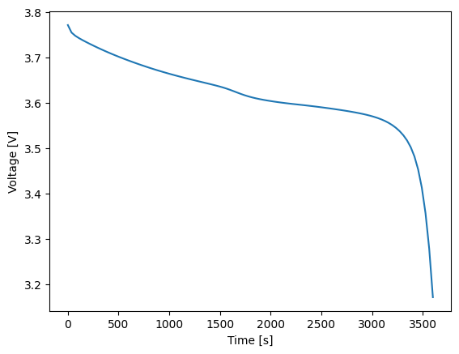
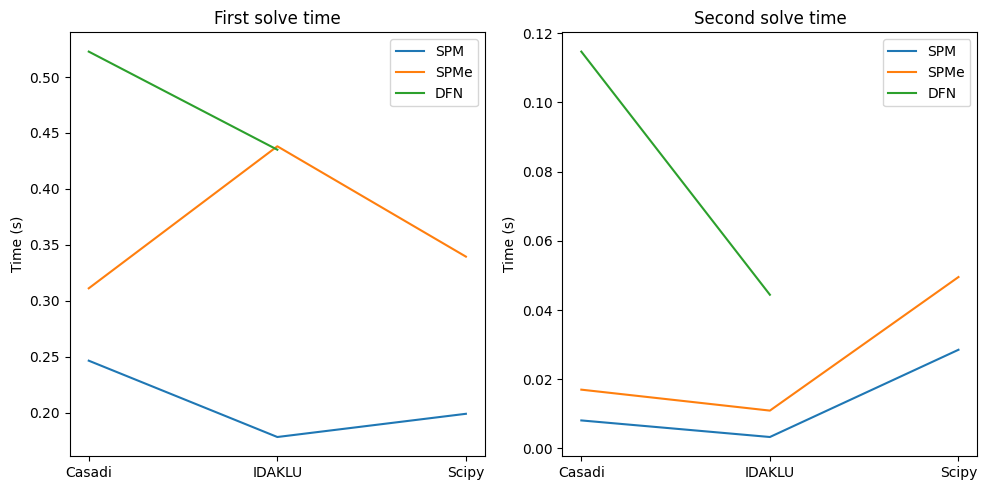

PyBaMM user guide#
This guide is an overview and explains the important features; details are found in API documentation.
Getting started
Fundamentals and usage
Contributing guide
Example notebooks#
PyBaMM ships with example notebooks that demonstrate how to use it and reveal some of its functionalities and its inner workings. For more examples, see the Examples section.
Getting Started




Creating Models

Performance



Telemetry#
PyBaMM optionally collects anonymous usage data to help improve the library. This telemetry is opt-in and can be easily disabled. Here’s what you need to know:
What is collected: Basic usage information like PyBaMM version, Python version, and which functions are run.
Why: To understand how PyBaMM is used and prioritize development efforts.
Opt-out: To disable telemetry, set the environment variable
PYBAMM_DISABLE_TELEMETRY=true(or any value other thanfalse) or usepybamm.telemetry.disable()in your code.Privacy: No personal information (name, email, etc) or sensitive information (parameter values, simulation results, etc) is ever collected.